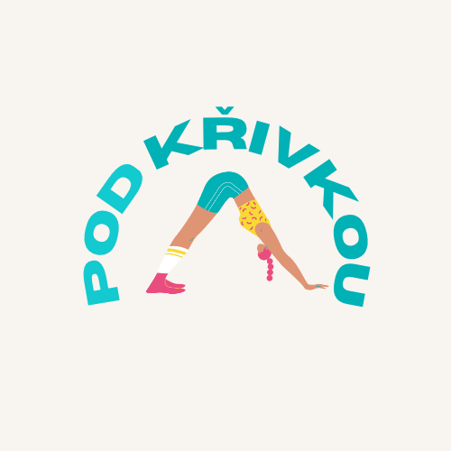

Diagnóza skoliózy, nošení korzetu nebo plánovaná operace páteře mohou být děsivé. Sami jsme si tím prošli, jsme po operaci a jsme tu, abychom ti ukázali, že život na druhé straně je plný síly, pohybu a dobrodružství bez limitů. Chceme ukázat, že šrouby v zádech nejsou konec světa, ale začátek nové, silnější kapitoly. Boříme mýty a dodáváme odvahu těm, kteří mají celou cestu teprve před sebou.

Skolióza je trojrozměrné vychýlení páteře. Zde jsou základní, lékařsky podložená fakta bez mýtů.
Zakřivení se měří ve stupních. Úhel nad 10° se považuje za skoliózu. Způsob léčby se mění v závislosti na progresi nad 25° nebo 40°.
Až 80 % případů je tzv. idiopatických – to znamená, že přesná příčina není známa. Rozhodně za ni nemohou těžké batohy nebo špatné sezení.
Křivka má největší tendenci rotovat a zhoršovat se během rychlého růstu v dospívání. Po dokončení růstu kostí se mírné křivky často zcela stabilizují.
Moderní medicína nabízí vysoce účinné způsoby, jak křivku zastavit nebo bezpečně korigovat.
U středních křivek (25°–40°) u rostoucích dětí pomáhá pevný plastový korzet (ortéza) zabránit zhoršování. Fyzioterapie (např. Schrothova metoda) se zaměřuje na vnitřní svalový korzet a správné dýchání.
💡 Sebevědomí do školy: Korzet se dá skvěle schovat pod stylové vrstvené oblečení. Otevřená komunikace s kamarády je ten nejlepší štít proti studu!
Pokud křivka přesáhne 45°–50° a dále prograduje, doporučuje se chirurgický zákrok. Operatér použije titanové tyče a šrouby, kterými páteř šetrně narovná a zafixuje, čímž dojde k bezpečnému zpevnění.
Dnešní metody jsou na špičkové úrovni, maximalizují bezpečnost a zkracují pobyt v nemocnici na minimum dní.
První týdny po operaci vyžadují klid, správné vstávání přes bok (log-rolling) a postupné chození. Během 6 až 12 měsíců kosti pevně srostou. Většina pacientů se vrací k plnohodnotnému životu – cestování, plavání, tanci, turistice a sportům bez chronických bolestí.
Praktický průvodce pro rodiče, sourozence a kamarády, aby věděli, jak s člověkem se skoliózou správně komunikovat.
PLalallala1
Ověřené odpovědi na opakující se otázky v ambulancích. Ušetřete čas sobě i svému lékaři.
Jsme Míša a Kixa. Obě jsme si prošly skoliózou – od korzetu až po operaci. Potkaly jsme se roky poté, co už se nám na zádech usadila jizva, a okamžitě jsme se shodly na dvou věcech. Za prvé: život po operaci skoliózy může být stále naprostá bomba, plný cestování, sportu a kamarádů. Za druhé: vyrůstat se skoliózou bylo často osamělé, náročné a plné nejistot, i když tak trochu skrytě.
Internet byl plný strašidelných diskusí a protichůdných rad, které v nás i našich rodičích vyvolávaly jen strach. Rozhodly jsme se to změnit. Pod Křivkou je projekt, kde spojujeme naše osobní zkušenosti s ověřenými lékařskými fakty. A takto bychom chtěly všem, kteří si tím prošli nebo právě procházejí, předat pořádnou dávku povzbuzení, naděje a ověřených informací.